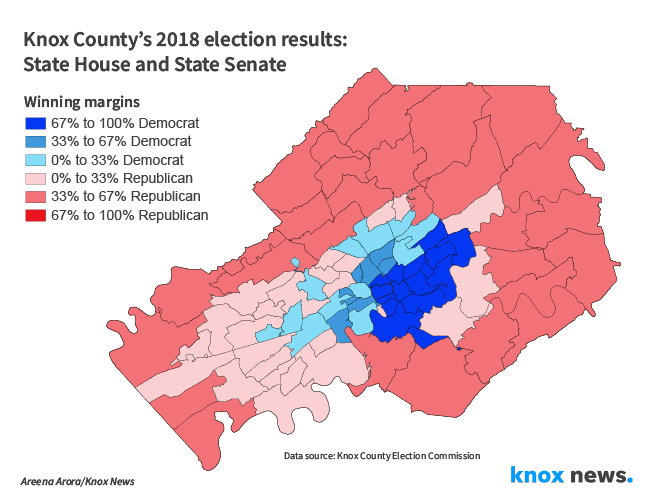
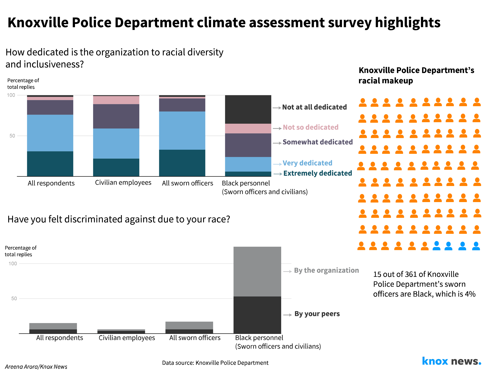
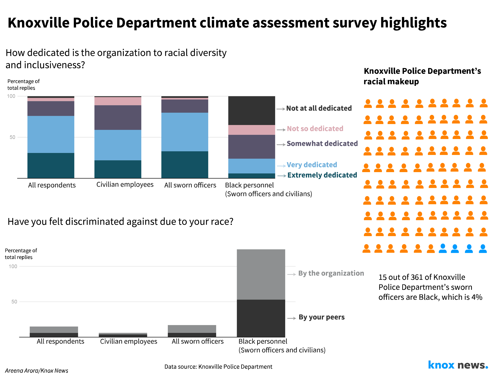
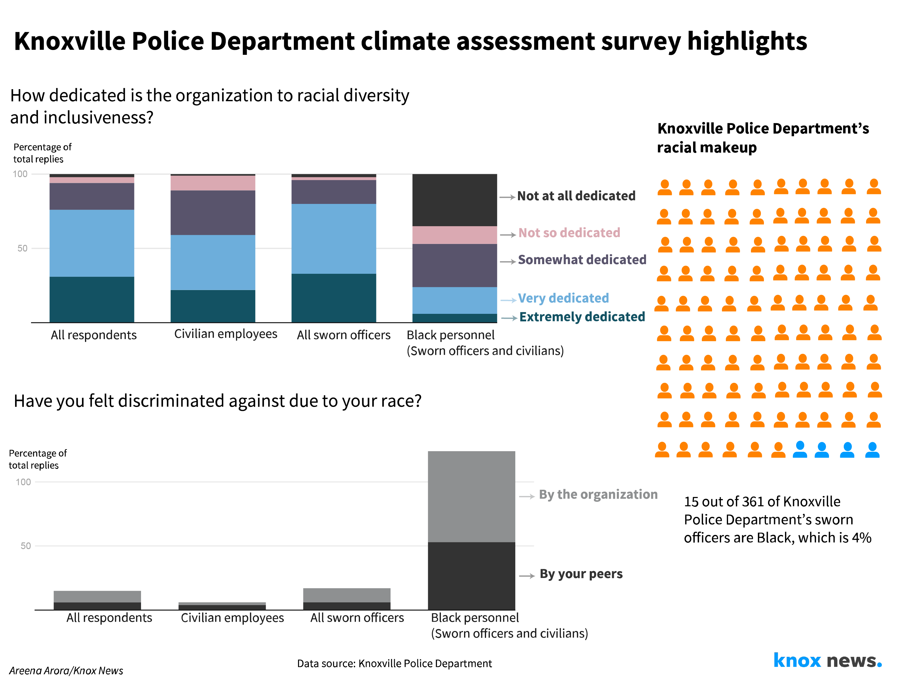
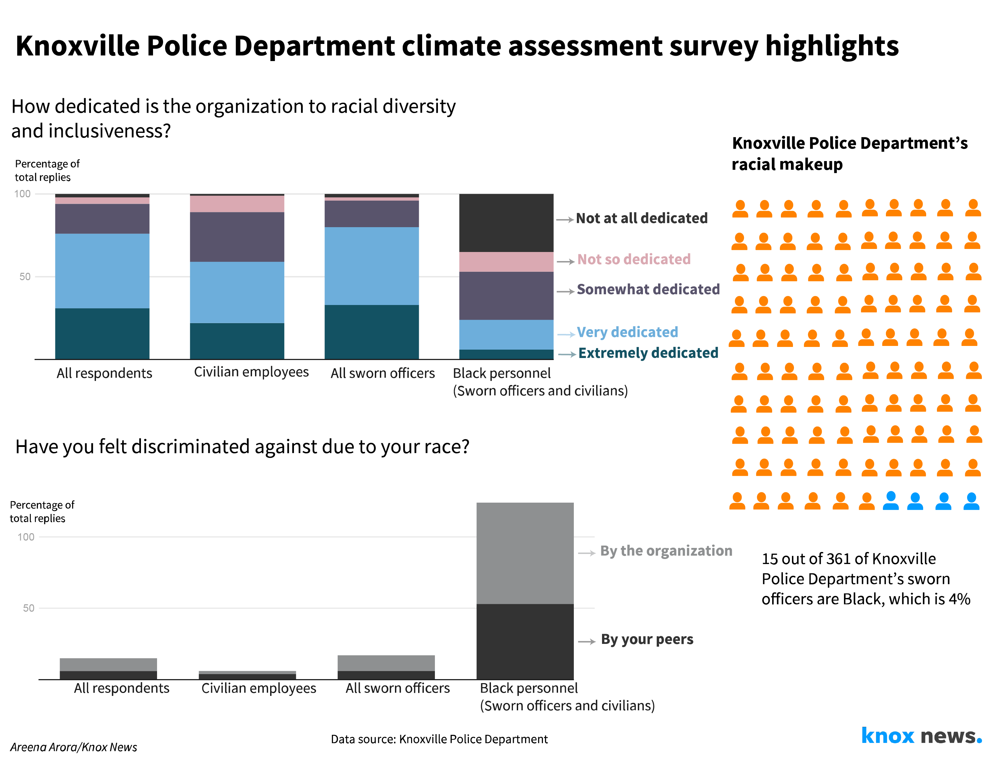

VISUALS

 



✨Data Journalist. House plants and Chai enthusiast.
I'm interested in covering the environment, stories of policy making and faith and how they intersect with lived experiences. I'm committed to building an open data culture for the newsrooms I work in. I love brainstorming alternate storytelling methods and building repositories of datasets.

The last three midterms in Knox County show blue creeping in. Check out the maps
Mapped data from state House and Senate races from the past three midterm elections – 2014, 2018 and 2022 to show changes in voting patterns.
Knoxville says secret police chief searches protect candidates. History shows that's not true
A data dive to debunk the city's claim that open police chief searches are detremental to candidates
Knoxville among top cities where immigrants thrive, study shows
Based off a study from the Bush Center, the nonpartisan research arm of the George W. Bush Institute.
Neyland Stadium has always been rowdy, and data shows beer sales have little to do with it
As the city debates keeping beer sales going at the University of Tennessee's Neyland Stadium, a data dive to explain how little affect beer sales actually have on rowdy incidents.
As housing inventory shrinks, people look to living in RVs
Rising housing prices push people, especially the elderly, to live in RVs.